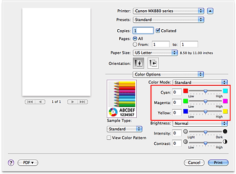

|
No adjustment |
Adjust color balance |
The procedure for adjusting color balance is as follows:
-
Select Color Options from the pop-up menu of the Print Dialog
-
Adjust color balance
There are individual sliders for Cyan, Magenta, and Yellow. Each color becomes stronger when the corresponding slider is moved to the right, and becomes weaker when the corresponding slider is moved to the left. For example, when cyan becomes weaker, the color red becomes stronger.
You can also directly enter a value linked to the slider. Enter a value in the range from -50 to 50. The current settings are displayed in the settings preview on the left side of the printer driver. Important
Important
-
Adjust the slider gradually.
-
-
Complete the setup
Click Print.
When you execute print, the document is printed with the adjusted color balance.
Important
-
When the Grayscale Printing check box is checked for Quality & Media, the color balance (Cyan, Magenta, Yellow) appear grayed out and are unavailable.
-
If you are using Mac OS X v.10.6.x or Mac OS X v.10.5.x and you select ColorSync for Color Matching, then the color balance (Cyan, Magenta, Yellow) appear grayed out and is unavailable.
If you are using Mac OS X v.10.4.11 and you select ColorSync or None for Color Correction, then the color balance (Cyan, Magenta, Yellow) appear grayed out and is unavailable.